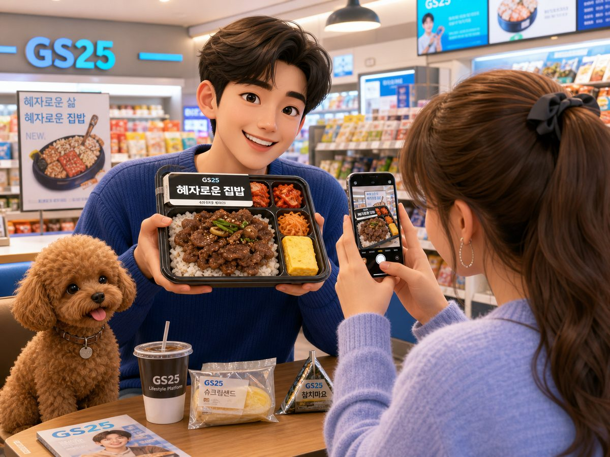
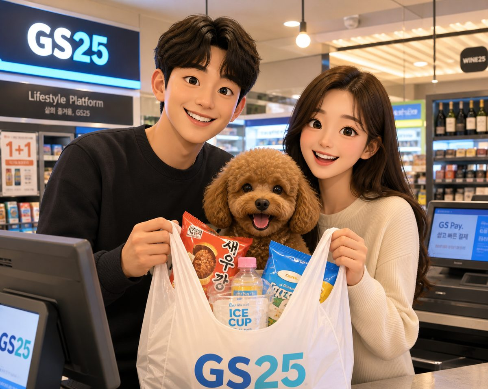

Everywhere · 24/7 · A1
GS25 runs: ordering, heating and paying at a Korean convenience store
The cheapest hot meal in Seoul, four self-service machines, and a promotion tag system that decides what you eat tonight. Here is the language, and the “honey combo” logic behind it.

Every Korean city has three things on repeat: a cafe, a church and a convenience store. GS25, CU, 7-Eleven, Emart24 — on a single block you may pass all four, and at 2 a.m. the one with the brightest windows is the one still feeding people.
For a learner, the convenience store is the friendliest room in the country. Nobody greets you at the door, nobody takes your order, and the clerk has heard every possible version of broken Korean. You can practice a full transaction in under a minute, and if you get it wrong, you leave with a snack instead of a problem.
Why this is the best classroom
A Korean convenience store is a self-service system with one human at the end of it. You choose, you heat, you pour, and then you talk for about eight seconds while paying. That short, repeated, low-stakes exchange is exactly what beginners need — and the vocabulary repeats across every branch in the country.
The other reason is cultural. Convenience stores are where students eat between classes, where office workers buy a 1,000-won coffee instead of a 6,000-won one, and where a solo traveler can have a hot meal at midnight without anyone looking at them. Payment is by card, phone or cash, and the card reader is the same everywhere.
One Korean word unlocks the whole genre
꿀조합 (kkul-johap) — “honey combination” — is what Koreans call a perfect pairing of two cheap items into something better than either. It is a whole genre of YouTube videos, and it is how people talk about convenience-store food. Learn the word and you have joined the conversation.
At the counter
The clerk will usually ask two things: whether you want a bag, and whether you have a membership or points card. Both questions have one-word answers, and both are worth knowing before you are standing there with your wallet out.
How much is this?
The universal price question. Point at the item as you say it — 이거 (igeo) means “this one”.
One bag, please.
봉투 (bongtu) = bag. Large stores in Korea charge a small fee for bags, so this is a real transaction, not a freebie.
I don’t need a bag.
필요 없어요 = “I don’t need it”. Useful far beyond the store — for straws, receipts, and the extra side dish you did not order.
Please heat this up.
데우다 (deuda) = to heat up. Point at the dosirak, say it, and the clerk will put it in the microwave behind the counter.
How many minutes in the microwave?
…돌려요? is the everyday verb for running a microwave or a washing machine. Most boxes print the time on the lid.
Where’s the hot-water dispenser?
온수기 (onsugi) = hot-water machine, the one you use for cup ramen. It is usually beside the microwave, against the window wall.
The honey combos
A “honey combo” is not a menu item. It is a combination you assemble yourself and then defend passionately online. These are the ones that have become standard, and the logic behind them is always the same: one cheap base, one texture, one hit of salt or spice.
The ice-cup coffee
Buy a cup of ice — a plastic cup filled with ice, sold near the drinks fridge — then use the store’s self-service coffee machine for a shot of espresso or an Americano over it. You end up with an iced coffee for roughly the price of a bus fare. GS25 runs its own low-cost coffee line, and the machine usually sits on the counter next to the hot-water dispenser.
Ramen plus rice
Cup ramen with a triangle kimbap (삼각김밥) is the student classic: hot, salty soup plus a mouthful of rice to make it a meal. The advanced version adds a can of tuna or a slice of cheese on top of the noodles before the water goes in.
The dosirak upgrade
A 도시락 (dosirak, a boxed meal) is the most complete cheap meal in the store: rice, a main, and three or four banchan in compartments. Heat it, add a single-serve soup or an egg, and it is a full dinner for less than a cafe sandwich.

Eating in, and the four machines
Most branches have a narrow counter by the window with two or three stools. Eating there is completely normal. What is not normal is leaving your tray: the store has separate bins for cups, liquids and general waste, and staff will politely point you to them.
The four machines you will meet, in the order you meet them:
- The hot-water dispenser (온수기) — for cup ramen. Hot water first, to the line inside the cup, then the lid, then three minutes of staring at it.
- The microwave (전자레인지) — for dosirak, kimbap and anything in a black plastic tray. Times are printed on the packaging.
- The coffee machine — usually one button for Americano, one for latte, and a coin or card slot.
- The ice-cream freezer — near the counter, and the reason every Korean child knows the layout of the store better than their own home.
Can I eat here?
…아/어도 돼요? = is it okay if I…. At a store with no seats the answer is a shrug and a gesture at the door — take it outside.
One pair of chopsticks, please.
젓가락 (jeotgarak) = chopsticks; 숟가락 (sutgarak) = spoon. They are usually in a self-service box beside the counter, and asking is faster than hunting.
I’ll pay by card.
…로 marks the means (“by card”). Tap the card on the reader and you are done — Korean cards work contactless almost everywhere.
Please add the points.
적립 (jeongnip) = accumulating points. If you have a membership app, this is the sentence; otherwise the clerk will ask and you can just say 괜찮아요.
A receipt, please.
영수증 (yeongsujeung) = receipt. Useful if you are claiming expenses, and the one piece of paper Koreans most often decline.
Is this buy-one-get-one?
Koreans read 1+1 as 원플러스원. The promotion tag on the shelf tells you — but the tag and the item are not always in the same place.

Culture deep dive: how the store is built
The layout is a sales argument
Drinks along the windows, chilled food in the middle, snacks at eye level, ice cream near the counter, cigarettes behind the clerk. Nothing is accidental: the cheapest impulse items sit where you queue, and the things you came for are at the back so you walk past everything else. Once you notice it, every Korean convenience store looks the same — because it is designed to.
행사 — the promotion tag system
The shelf tags carry the deal: 1+1 (buy one, get one), 2+1 (buy two, get one), or a straight discount. The Korean word on those tags is 행사 (haengsa), literally “event”. Promotions rotate every few weeks and are the reason two people can buy the same snack at different prices on different days.
Season turns the menu over
Winter brings 호떡 (sweet filled pancake) and 붕어빵 (fish-shaped pastry) to the hot case, plus fish cake soup. Summer brings ice cups, cold noodles and 빙수. The store is a calendar: if you want to know what month it is, look at what is stacked by the door.
Everything is a small unit
Single bananas, two eggs, one portion of kimchi, a 200 ml milk. Korean convenience stores are built for people who live alone — a huge share of Korean households are single-person households — and for eating on the move. It is the cheapest way to try a food you are not sure about, because the portion is small enough that regret costs about a dollar.
Etiquette, in four lines
- Take your tray to the bins. Cups go in the cup bin, liquid into the sink, everything else in general waste.
- Don’t eat the store’s food on the street if there is no seat — hold it, or find the bench outside. Some districts fine littering, and staff are the ones who get blamed.
- Say 감사합니다 on the way out. It is not required, and it is why the clerk remembers you.
- Do not block the counter while you eat or charge your phone. The window counter is shared, and Koreans will stand rather than ask you to move.
The best 1,000 won you will spend
A cup of store coffee costs less than a bus ticket and comes with a table, a window and a place to sit while you review this lesson. If you are travelling on a budget, the convenience store is not a compromise — it is the plan.
The words, in one table
| Korean | Romanization | English |
|---|---|---|
| 편의점 | pyeon-uijeom | convenience store |
| 꿀조합 | kkul-johap | “honey combo”, a perfect pairing |
| 삼각김밥 | samgak gimbap | triangle rice ball |
| 컵라면 | keop ramyeon | cup ramen |
| 도시락 | dosirak | boxed meal |
| 봉투 | bongtu | bag |
| 전자레인지 | jeonja-reinji | microwave |
| 온수기 | onsugi | hot-water dispenser |
| 젓가락 | jeotgarak | chopsticks |
| 숟가락 | sutgarak | spoon |
| 영수증 | yeongsujeung | receipt |
| 적립 | jeongnip | point accumulation |
| 행사 | haengsa | promotion, special offer |
| 얼음컵 | eoreum keop | cup of ice |
| 포장 | pojang | takeaway, wrapping |
| 먹고 가다 | meokgo gada | eat in and then leave |
| 카드 | kadeu | card |
| 현금 | hyeongeum | cash |
Mini quiz
Three small decisions, three sentences.
Before you go
The convenience store is where most visitors have their first successful Korean transaction, and it is worth doing on purpose: pick three items, ask the price of one, refuse the bag, and pay by card. Four sentences, thirty seconds, and you will walk out with the exact confidence the rest of the trip needs.
That is the third lesson. If you started at the palace, you now have the whole arc: the formal, the loud and the practical.
Keep going

The daily letter · paid subscription
Daily Morning Letters & Live Class with Ku
Two real Korean sentences every morning — Ku reads them, breaks down every word, and adds the culture note no textbook gives you. A one-hour live class with Ku every two weeks, subscriber-only.
- $6.99 a month
- $59 a year 29% off
- 7 days free first
Billing and access are handled by Gumroad. Cancel during the trial and nothing is charged.